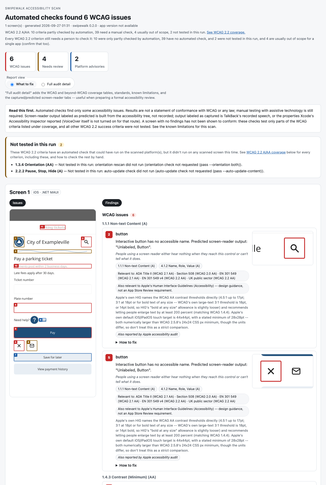

Swipewalk reads a running app through the platform's accessibility layer, the same layer screen readers use. It checks what users actually get: rendered text contrast, touch target sizes, missing or misleading names, and text that breaks at large text sizes. Each finding is mapped to WCAG 2.2 success criteria, and the report shows the order and wording a screen reader would likely announce (predicted, not recorded).
Not a compliance verdict. Automated checks find only some accessibility issues. A report with no findings doesn't show that an app meets WCAG or any law; manual testing with assistive technology is still required.
Use a test device. On a physical phone, several checks temporarily change device settings and restore them afterwards: the large-text check changes the text size; the dark/light and orientation rescans switch the device's appearance or rotate it; and on Android,
--screen-reader (TalkBack capture; opt-in on the command line, on by default in the Mac app) turns TalkBack on and installs a small helper app so it can read back exactly what TalkBack says, leaving TalkBack silent for the length of the capture and removing the app again once the settings are back. If a run is interrupted, the next run or swipewalk doctor restores what it can -- including TalkBack's settings, whether or not that run itself asks for --screen-reader -- and says how to change anything back by hand if it can't. Avoid running these checks on a phone someone relies on every day.
Install
Needs the .NET 10 SDK on macOS, plus Android platform-tools (for Android) or Xcode (for iOS).
dotnet tool install -g Swipewalk
swipewalk doctor --platform android
swipewalk scan --platform android --large-text --out reportOr download the Mac app (signed and notarized, macOS 12 or later) from the releases page: it runs the same scans in a window, with a device list, live progress, the report and a comparison with earlier runs.
What a report looks like

What it does
- Scans one screen, or scans each new screen while you use the app; it can also rescan each at a large text size (Android and iOS, including physical phones, where it changes the phone's text size and restores it afterwards -- on an iPhone through the Settings app; use a test device). Screens that weren't scanned are listed as a manual task.
- Rescans a screen in the device's other dark/light appearance and other orientation (
scanonly for now), including on a physical iPhone where its own settings allow, so a contrast failure or layout problem that only shows up in one theme or one orientation isn't missed. A further opt-in check (alsoscanonly for now) takes a few more captures a few seconds apart and flags content that changed on its own. - Measures text contrast from screenshot pixels, not from source code.
- Keeps WCAG issues apart from platform guidelines (Apple's 44×44 pt default and 28×28 pt stated minimum, Android's 48×48 dp touch targets).
- Labels findings with the standards they are relevant to: ADA Title II, Section 508, EN 301 549, UK public sector regulations, plus each standard's own clauses beyond WCAG, and opt-in mappings for researched US states and other countries. This is not legal advice.
- Compares runs: new, still found, and no longer found.
- Includes Apple's own accessibility audit on iOS and Google's Accessibility Test Framework on Android. On Android debug builds, an opt-in
--web-auditadds a deeper audit of a WebView's own page with axe-core; on the Android emulator, web content inside an app is scanned either way (verified there only; on a physical phone it isn't scanned by default). - On Android, can also drive TalkBack itself over a screen's elements (opt-in with the command-line tool's
--screen-reader; on by default in the Mac app) and report differences from the predicted transcript for you to check, running locally with no cloud service. On iOS, can read what Xcode's Accessibility Inspector reports for each element instead of turning VoiceOver on. - On Android, can record a live session while you use TalkBack yourself, for as long as you like: which controls TalkBack reached, what it said, and your own notes, as evidence to review by hand (never a pass or fail). On a physical iPhone, a first-look option reads VoiceOver's on-screen captions while you swipe through a screen yourself (tried on one iPhone SE, with a sample app, in English).
- Groups findings that likely share one root cause (the same measured colors, touch-target size or identifier pattern) -- one change may fix several of them, but every instance is still listed -- and states who each finding affects, in plain language. Reports record the scanned app's own version (read from the device when available), so progress lines up with releases.
- Exports a saved run's findings as one Markdown ticket per issue, a CSV for bulk import, a self-contained HTML report, a tagged PDF for printing, or a draft Accessibility Conformance Report for a person to review. Saved runs group by app and version, and you can combine several scans of one version into one report, choosing which scans go in -- the report covers only the screens in the scans you choose.
- Shows fix examples in the app's own framework -- .NET MAUI, native Android (Views, Jetpack Compose), native iOS (UIKit, SwiftUI), Flutter, React Native and hybrid web. Outside .NET MAUI and the earlier generic native examples they are written from each framework's own documentation and not yet tried in a real app of that framework. Optionally,
--sourcepoints a finding at a likely line in your own .NET MAUI, native Android, native iOS, React Native or Flutter project, read locally and never uploaded; it has been tested only on Swipewalk's sample apps and small made-up projects, so check the line it names. - Lets a team mark a finding as false positive, won't fix or accepted risk, with a required reason -- never "fixed". The report moves it into a "Triaged by your team" group (the total still counts it), and exports carry the mark, without changing the underlying scan data; the Mac app carries a mark forward into the app's next run when it is clearly the same finding.
What it doesn't do
- No overlays: Swipewalk adds nothing to your app and doesn't claim to fix it at runtime; it reports what the app's accessibility layer exposes so the app itself can be fixed.
- No certification or legal advice: standards are shown for reference only, never as a compliance verdict.
- No automatic code changes: every fix is left to the developer to make and review.
- Not a replacement for testing with disabled people: automated checks find only some issues, and many criteria still need manual testing, ideally including people who use assistive technology every day.